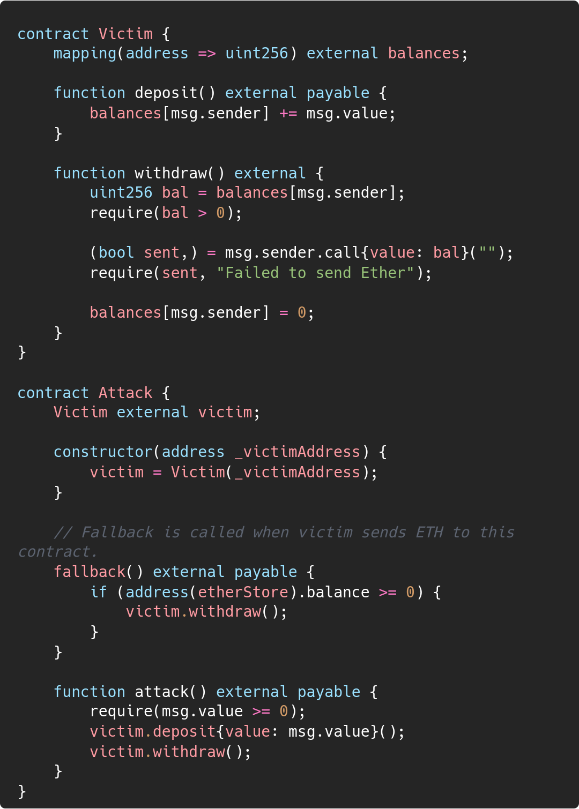
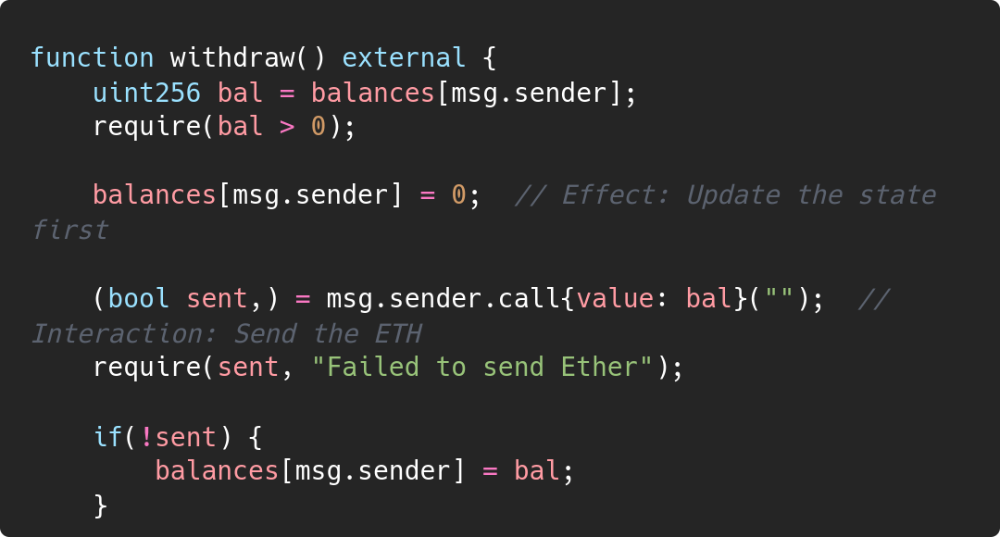
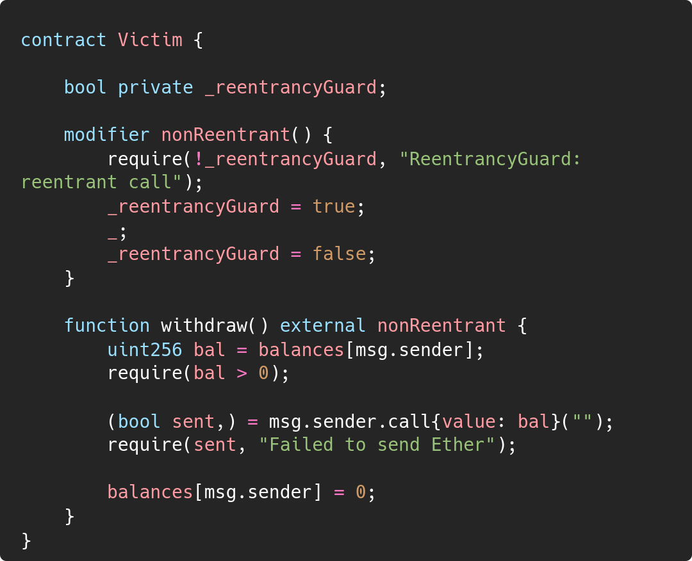
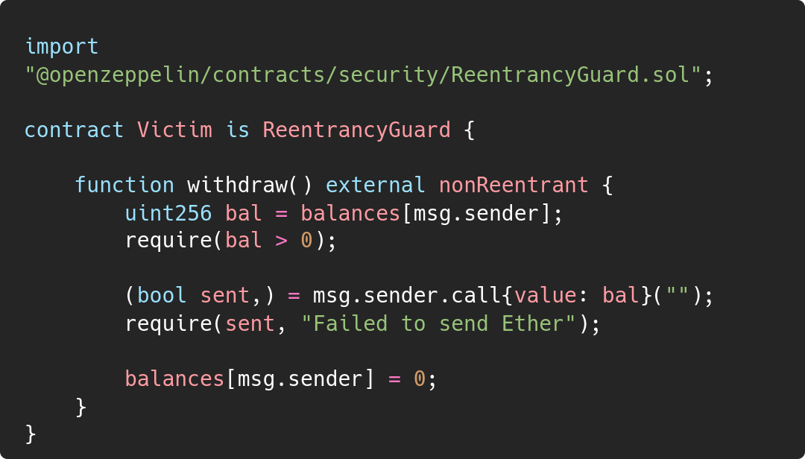

Reentrancy |
|
| Organization | DeepStack Software Pvt. Ltd. |
|---|---|
| Org URL | https://www.deepstacksoft.com |
Posted on: 2024-09-18
In Solidity smart contracts, external calls to unknow or untrusted contracts can expose your contract to a reentrancy attack. A reentrancy attack occurs when an attacker repeatedly calls the vulnerable contract’s function before the original function completes, exploiting the contract’s logic to withdraw funds multiple times before the state is updated.
This post will walk through the mechanics of a reentrancy attack, and how to protect your contracts using two common techniques: Checks-Effects-Interactions (CEI) and Reentrancy Guard.
Let’s break down how the reentrancy attack works using two contracts:
Victim and Attack

attack() function in the Attack contract. This
calls victim.deposit() to deposit some ETH
into the Victim contract. The Victim contract
updates the attacker’s balance.attack()
function calls victim.withdraw() to withdraw the deposited
ETH from the Victim contract. Here, the
vulnerability is triggered because withdraw() sends the ETH
back to the attacker before updating the balance.Victim.withdraw() sends ETH to the attacker, the attacker’s
contract’s fallback function (fallback()) is called, which
once again calls victim.withdraw(). This happens before the
balance of the attacker is updated in Victim, allowing them
to withdraw more than they originally deposited.Victim contract until all ETH is withdrawn or the
transaction runs out of gas.Here are two methods you can use to protect your contract from reentrancy attacks
Refactoring your contract code in way that updates the state variables before handing over the execution control to some unknown address

By shifting the (balances[msg.sender] = 0;) before the
external call, this way the attacker contract won’t be able to take
advantage of later state change since the balance will already be set to
0, preventing further withdrawals.
Another method is to use a reentrancy guard, which is a simple boolean flag that locks the contract during execution, preventing any reentrant calls.
Here’s how you can implement it manually:

Alternatively, you can use OpenZeppelin’s
ReentrancyGuard to handle this for you. Simply inherit the
ReentrancyGuard contract and use the
nonReentrant modifier

The nonReentrant modifier ensures that the
withdraw() function cannot be called again until it
completes execution.
Reentrancy attacks can be devastating for smart contracts, allowing attackers to drain funds by exploiting logic vulnerabilities. By using the Checks-Effects-Interactions (CEI) pattern or implementing Reentrancy Guard, you can safeguard your contracts from this common attack vector.
Always ensure your contract’s state is updated before external calls or use established libraries like OpenZeppelin to simplify protection measures.